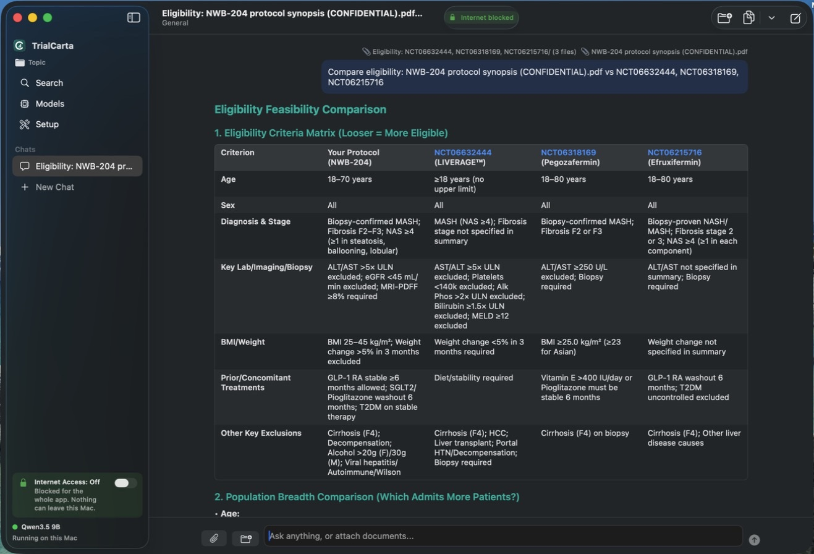
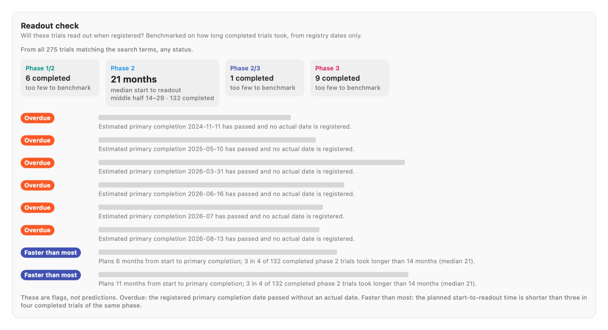
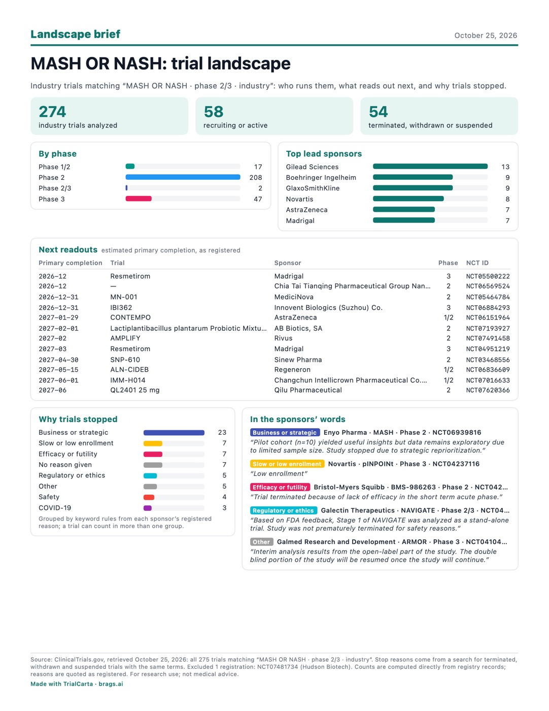
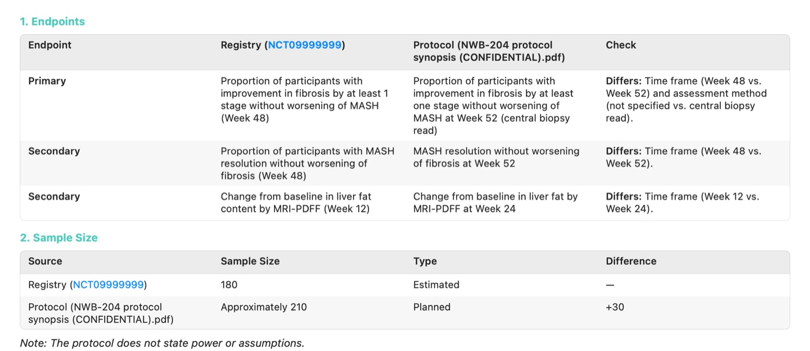
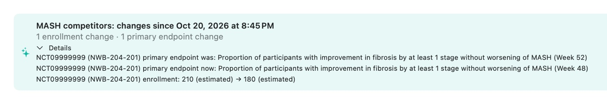
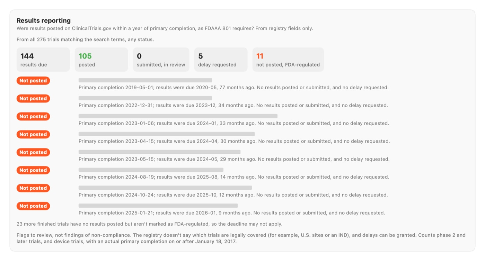

Clinical trial research in minutes, checked against the source.
The trial research an analyst spends days on: search ClinicalTrials.gov and PubMed, see the landscape at a glance, and compare it with your own protocol. Every number traces back to a registry record or paper, and it all runs privately on your Mac.

From search to answer in minutes
The work an analyst spends half a day on: pulling trials, counting them, reading records, and writing it up with sources.
Search
Query ClinicalTrials.gov and PubMed, separately or together, by condition, drug, sponsor, phase, status, country and dates. Trials are linked to the papers that report them.
See the landscape
Exact charts of phases, statuses and sponsors, a readout timeline of upcoming primary completions, and a breakdown of why trials stopped. Download any chart for your slides.
Ask
Summarize the landscape, compare trials side by side, or ask your own questions. Answers come from a model running on your Mac and cite every trial and paper they use.
See it run
A real session, sped up: search, compare three trials, switch the internet off, attach a confidential protocol, and save the answer as a PDF.
Built for answers you can defend

Your protocol against the competition, offline
Attach a draft protocol, switch the internet off, and compare its eligibility criteria with the competing trials recruiting the same patients. The analysis runs on your Mac, so the protocol never goes anywhere.
- See which of your criteria narrow the patient pool the most
- Spot competitors recruiting in the same countries
- Works the same with data-room documents and client briefs

Every citation checked
Under each answer, TrialCarta checks every NCT ID, PMID and file name against the records you actually retrieved. Anything it can't find is flagged, so a made-up trial never slips through.
- Numbers that the cited records don't contain are listed to double-check
- Click any ID to see the exact record the model read
- Background knowledge is labeled as such, not dressed up as a source

Trial names hidden for this page; in the app, each row links to its record.
Evidence, not predictions
TrialCarta doesn't guess how a trial will turn out. It shows how comparable trials actually played out, and lets you see the trials behind every number.
For example: completed phase 2 MASH trials took a median of 21 months from start to primary completion, and six competitor readouts have passed their registered date without an update.

Know what reads out when
A timeline of ongoing trials from start to primary completion, colored by phase, with today marked. Save it as PNG or PDF, or copy it straight into a deck.
Saved searches show what changed since your last look: new trials, status changes, readout dates that moved, reworded primary endpoints, enrollment changes and newly posted results.

See why trials stopped
For any search, TrialCarta pulls the terminated, withdrawn and suspended trials and groups them by the reason each sponsor registered: enrollment, efficacy, safety, business, funding and more.
The counts are exact, not guessed by a model, and the write-up quotes each sponsor's own words with the trial ID.

A one-page brief to share
Export the landscape as a one-page PDF: headline counts, phases and sponsors, the next readouts, and why trials stopped in the sponsors' own words. It's computed from registry records with no AI-written text, so it's safe to send outside the team.
Answers save as PDFs too, labeled as AI-written, with their citation check and a table of the cited trials.


Example with a fictional sponsor, drug and registry record (Northwind Bio, NWB-204).
Check a protocol against its registration
Pick a trial and attach its protocol. TrialCarta lines up the endpoints, planned sample size, arms and phase with what the sponsor registered on ClinicalTrials.gov, and lists every difference to review, citing both sources.
- Diligence on a target's protocol from the data room, offline
- Check your own registration before it goes public
- Get alerted when a watched trial changes its registered primary endpoint or enrollment

Trial names hidden for this page; in the app, each row links to its record.
Did they post their results?
FDAAA 801 expects results on ClinicalTrials.gov within a year of primary completion. TrialCarta checks every finished trial in a search: posted, submitted and in review, delay requested, or nothing at all.
For example: of 144 MASH trials whose results were due, 105 have posted them and 11 FDA-regulated trials show nothing, some for years. These are flags to review, computed from registry fields, not legal findings.
Compare eligibility
Line up age, disease stage, lab thresholds, prior treatments and exclusions across trials, optionally against your own protocol, to see where you admit more or fewer patients.
Side-by-side comparisons
Pick up to six trials and get a table of sponsor, phase, design, enrollment, endpoints and dates, with the differences that matter.
Your documents, alongside
Attach PDFs, Word files or scans, or point TrialCarta at a folder, and ask about them next to the public data.
Ready for your report
Copy answers into Word, Google Docs or email with tables intact, save them as PDFs with their references, or export results to CSV.
Topics that remember
Keep each project in its own topic, with its searches, documents and chats, and pick up any conversation where you left off.
Charts you can trust
Every chart is counted directly from the records, never estimated by AI, and labeled with the search and date it came from.
Confidential work stays on your Mac.
TrialCarta is a Mac app, not a website. The AI runs on your computer, so a protocol, a data-room document or a client brief is never uploaded anywhere.
- One switch blocks the internet. Turn Internet Access off and the app and its helpers can't reach the network at all, enforced by a macOS sandbox, not a promise.
- Open models, running locally. No cloud AI service sees your questions or your files. Internet is used only to search public registries and to download models.
- No usage limits or per-query costs. Nothing is metered, and there's no cloud AI vendor to approve.
- No account, no tracking in the app. Your topics and chats are files on your Mac, and deleting a topic deletes its data.
- Runs on Apple silicon Macs. 16 GB of memory or more is recommended for the best answers.
Who it's for
Clinical operations and feasibility
Size up competing trials, compare eligibility against your draft protocol, and learn from trials in your indication that stopped for slow enrollment.
Competitive intelligence
Track who's ahead in each indication, what reads out next, and what changed this week, with every claim traceable to a registry record or paper.
BD, investors and diligence
Assess an asset's landscape and risks quickly, and work with confidential deal documents without sending them to a cloud service.
TrialCarta supports research. It is not medical advice.
bRAGs: chat with your own documents, privately
Ask questions about PDFs (including scanned ones), Word files, images or a whole folder, all on your Mac. Point it at a project folder and it keeps up with your changes before every question.
See TrialCarta on your own indication.
We're based in San Diego and running free 15-day pilots with a small group of teams. Tell us the indication you care about and we'll walk you through it.
Prefer email? Write to our team.